Experiences & Projects
Blog Post
Event driven architecture for business
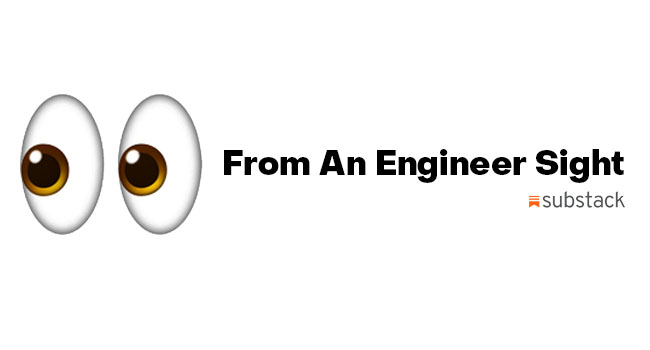
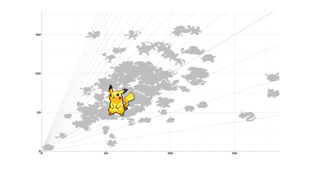
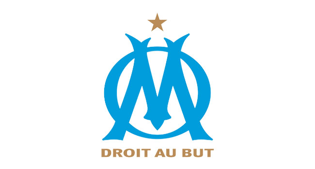
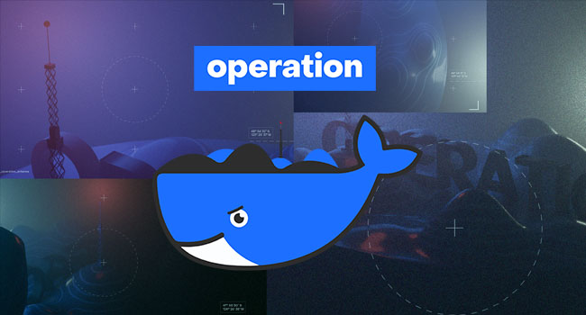

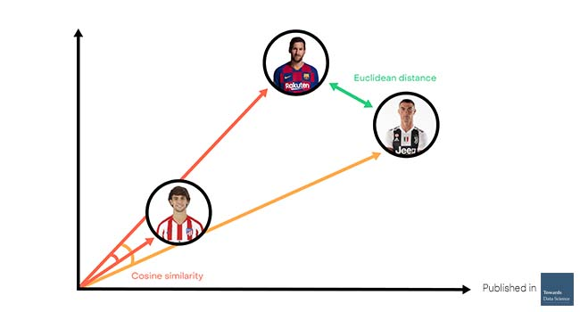
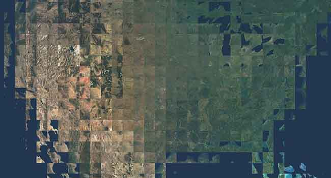
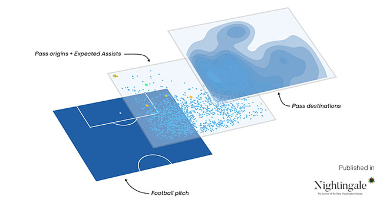
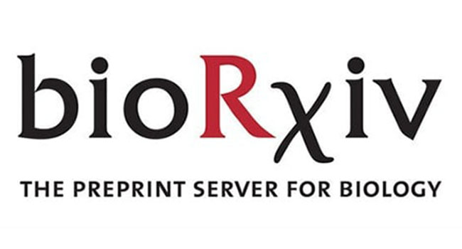
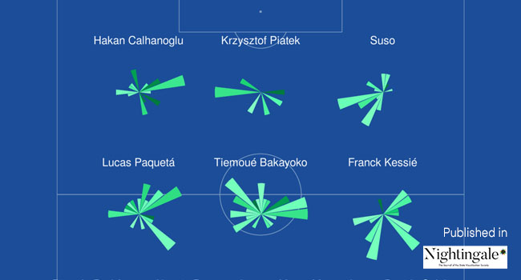
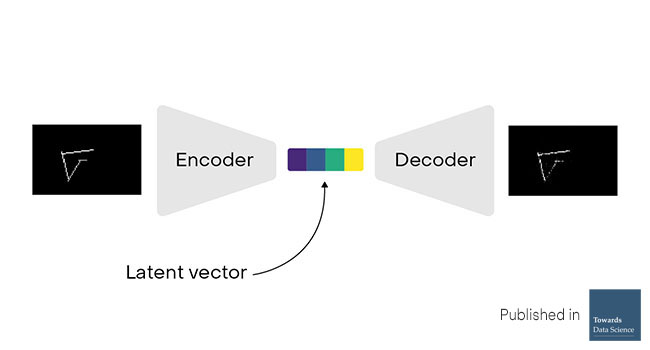
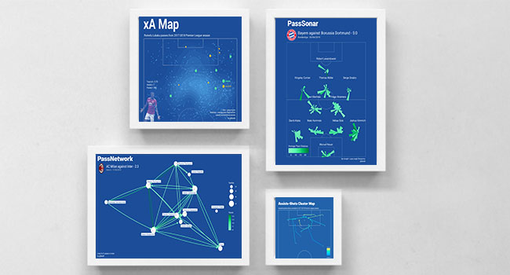


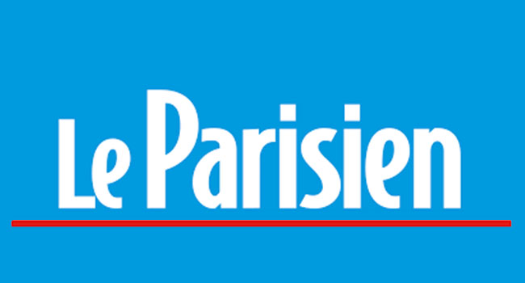
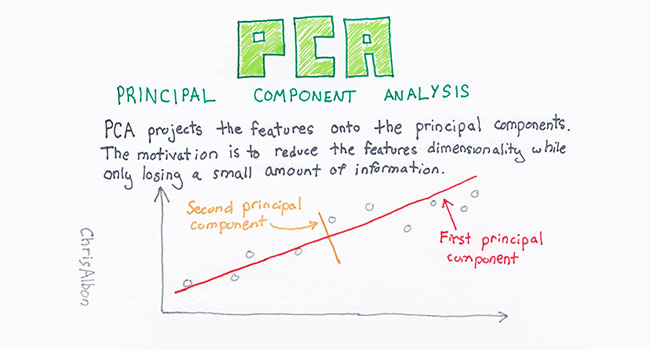
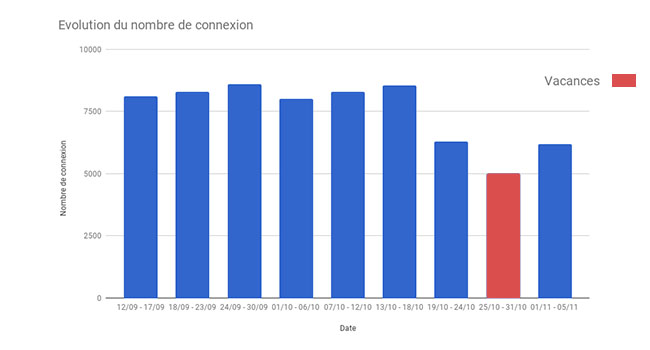
Data analysis
Study of an E-learning site
Exploration of user behavior and ways to improve the platform
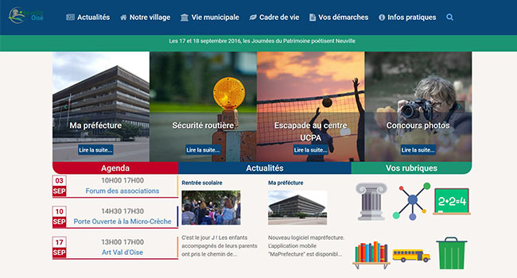
Developpement
Web developer
Study of the structure and ergonomics of the site. Joomla component implementation and use of the Gantry framework
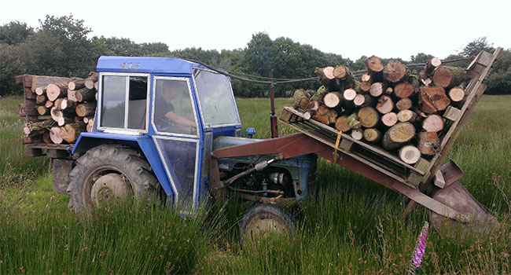
Experience abroad
WWOOFER
Experience in England via the WWOOF organization, farm work, various constructions, animal feed, etc...